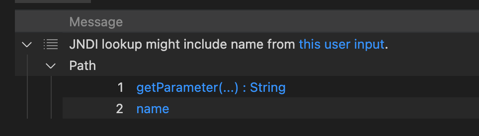

Using CodeQL to find out Log4j CVE-2021-44228
Although there is a experimental CWE-020 query used for “Potential Log4J LDAP JNDI injection (CVE-2021-44228)” already, but at this time, I want to refit the CWE-074 to make it could find out CVE-2021-44228
Introduction
As we all know, Log4j is caused by user-controlled JNDI lookup, from the document, I found CodeQL query help covered it and it’s CWE number is CWE-074. Here is the doc: JNDI lookup with user-controlled name
Let’s walk through this CWEs and try to use it to find the Log4j CVE-2021-44228
Interpret the CWE-074
The CWE-074 Code: https://github.com/github/codeql/blob/main/java/ql/src/Security/CWE/CWE-074/JndiInjection.ql
As we can see, it encapsulated the mots code into semmle.code.java.security.JndiInjectionQuery
By the comments in the code, we can know that this lib is used to provide taint tracking configurations to be used in JNDI injection queries.
And in it, we can find that it requires 4 libs as following
semmle.code.java.dataflow.FlowSources- Provides classes representing various flow sources for taint tracking
- This is a basic lib for CodeQL
semmle.code.java.frameworks.Jndi- Provides classes and predicates for working with the Java JNDI API.
semmle.code.java.frameworks.SpringLdap- Provides classes and predicates for working with the Spring LDAP API.
semmle.code.java.security.JndiInjection- Provides classes and predicates to reason about JNDI injection vulnerabilities.
- It’s important for us, so we will analyze it
Interpreter JndiInjection.qll
Class DefaultJndiInjectionSink
It invokes the internal experimental API, and in practice, I found that it could locate the JNDI lookup function
This code written by myself as following works as same as the sinkNode invokes.
1 | exists(MethodAccess ma, Method m | |
Class ConditionedJndiInjectionSink
This class extends JndiInjectionSink and DataFlow::ExprNode, so it’s a Node and also a ExprNode.
The codeql judge code is as bellow
1 | exists(MethodAccess ma, Method m | |
Let’s divide it into 3 parts by the | operand .
1 | MethodAccess ma, Method m |
Firstly, there are a method access and a method.
1 | ma.getMethod() = m and |
The method access accessed the m method and the sink as expression is the method access’ first argument and the method is Ldap operation
1 | m.hasName("search") and |
the method could be search and it’s third argument should be true at compile time or the method could be unbind and it’s first argument should be true at compile time
What’s the meaning of this? Let’s check it in real code.
TypeLdapOperations includes 2 classes
org.springframework.ldap.coreorg.springframework.ldap
So this is only for the condition with SpringFramework, but this time, I want to find out a more general conditional without any framework. However, it’s a good idea to analyze it next time.
Class ProviderUrlJndiInjectionSink
As the comment said, it could find out the sink about the provider URL.
1 | /** |
1 | exists(MethodAccess ma, Method m | |
m.getDeclaringType().getASourceSupertype*() instanceof TypeHashtable means m Method should be sub of java.util.Hashtable.
(m.hasName("put") or m.hasName("setProperty")) indicates the name of the method
The final part indicates the first parameter should be a String java.naming.provider.url or a Field with type javax.naming.Context and the name should be PROVIDER_URL
1 | ( |
So, obviously, if the user input could only control the provider URL, this query still could locate it.
Class DefaultJndiInjectionAdditionalTaintStep
A set of additional taint steps to be considered for taint tracking JNDI injection related data flows, in order to avoid taint tracking breaks when invoking third-party packages.
nameStep(node1, node2)holds ifn1ton2is a dataflow step that converts betweenStringandCompositeNameorCompoundNameby callingnew CompositeName(tainted)ornew CompoundName(tainted).nameAddStep(node1, node2)holds ifn1ton2is a dataflow step that converts betweenStringandCompositeNameorCompoundNameby callingnew CompositeName().add(tainted)ornew CompoundName().add(tainted).jmxServiceUrlStep(node1, node2)holds ifn1ton2is a dataflow step that converts betweenStringandJMXServiceURLby callingnew JMXServiceURL(tainted).jmxConnectorStep(node1, node2)holds ifn1ton2is a dataflow step that converts betweenJMXServiceURLandJMXConnectorby callingJMXConnectorFactory.newJMXConnector(tainted).rmiConnectorStep(node1, node2)holds ifn1ton2is a dataflow step that converts betweenJMXServiceURLandRMIConnectorby callingnew RMIConnector(tainted).
Interpreter JndiInjectionQuery.qll
Now, let’s advance to the “query” lib, here contains some information about how to perform global taint tracking.
Class JndiInjectionFlowConfig
1 | class JndiInjectionFlowConfig extends TaintTracking::Configuration { |
It applied the JndiInjectionSink as the Sink to track
isSanitizer defines the condition that the result should be removed, in this case, if the node is a primitiveType or a BoxedType (Wrapped primitiveType), it will be removed.
isAdditionalTaintStep adds additional taint steps, in this case, it uses JndiInjectionAdditionalTaintStep, while using this lib, the any filter indicates that we will any available subclass and here we will use class DefaultJndiInjectionAdditionalTaintStep which has been interpreted.
Class UnsafeSearchControlsSink
A method that does a JNDI lookup when it receives a
SearchControlsargument withsetReturningObjFlag=true
This class defined the unsafe search controls sink
1 | exists(UnsafeSearchControlsConf conf, MethodAccess ma | |
As we can see, it requires UnsafeSearchControlsConf, it defines the source and the sink of the flow, the source should be UnsafeSearchControls and the sink should be UnsafeSearchControlsArgument.
UnsafeSearchControls: ASearchControlsobject withsetReturningObjFlag=true.- https://docs.oracle.com/javase/8/docs/api/javax/naming/directory/SearchControls.html
setReturningObjFlagenables/disables returning objects returned as part of the result.
UnsafeSearchControlsArgument: An argument of typeSearchControlsof anLdapOperations.searchorDirContext.searchcall.
So the sink should be a method access’ first argument and one of the method access ‘ arguments will be flowed in following the rule defined in UnsafeSearchControlsConf.
Test JndiInjection.ql with Java code
JndiInjection.ql just simply invoked path query with JndiInjectionFlowConfig.
Here is the test code and part of it is extracted from the official demo.
1 | public void doGet(HttpServletRequest request, HttpServletResponse response) { |
1 | java -cp marshalsec-0.0.3-SNAPSHOT-all.jar marshalsec.jndi.RMIRefServer http://127.0.0.1:4444/\#Exploit 1099 |
1 | jdk8 |

We got the expected result. Verify the previous analysis with Quick evaluation
DefaultJndiInjectionSinklocatedString name = request.getParameter("name");ProviderUrlJndiInjectionSinklocatedenv.put(Context.PROVIDER_URL, "rmi://127.0.0.1:1099");
Excellent, this query works very well.
Advance to Log4j CVE-2021-44228
Introduce org.apache.logging.log4j-2.14.1 which you can find here
Prepare the database for CodeQL
After configuring the toolchains-sample-*.xml, we can get the CodeQL database.
For better performance, we can exclude useless projects in modules section.
1 | <modules> |
1 | codeql database create log4j-db -l java -s logging-log4j2-rel-2.14.1/ -c './mvnw clean install -t toolchains-sample-mac.xml -Dmaven.test.skip=true' |
Locate the source
Through debugging, we can know that the user input source is located in the various log functions in log4j-api/src/main/java/org/apache/logging/log4j/spi/AbstractLogger.java, like debug, info,error, and all of them will invoke logIfEnabled with “message” or “messageSupplier” parameter as log message.
So the source should be like this
1 | class Log4jFlowSource extends DataFlow::Node{ |
And we need a new TaintTracking::Configuration
1 | class JndiInjectionFlowConfigInLog4j extends TaintTracking::Configuration{ |
Just changed the isSource part and the other remains the same as JndiInjectionFlowConfig.
Run this query, we got this


Lucky! We successfully find a path proved that the user input could be passed to JNDI lookup. Full code is shown as bellow.
1 | /** |
References
CodeQL CWE Coverage: https://codeql.github.com/codeql-query-help/codeql-cwe-coverage/
CodeQL query help for Java: https://codeql.github.com/codeql-query-help/java/
CodeQL Repository: https://github.com/github/codeql/tree/main/java/ql/src/Security/CWE
Using CodeQL to find out Log4j CVE-2021-44228
https://www.4xpl0r3r.com/Experience/Using-CodeQL-to-find-out-Log4j-CVE-2021-44228/